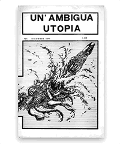
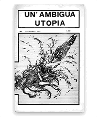

Il capitale deve, per sopravvire e svilupparsi, reprimere i veri bisogni dell’uomo, per sostituirli con i suoi bisogni, con un modello di vita e di società a lui congeniale. La fantascienza è un segno di rivolta a tutto questo, è la riscossa del principio del “piacere” sul principio di “realtà”.
Un’Ambigua Utopia N.1 - Aprile 1978
Esplora l'archivio
Il progetto
La fine dell'Uomo (2019)
Un'Ambigua Utopia N.10
Il podcast